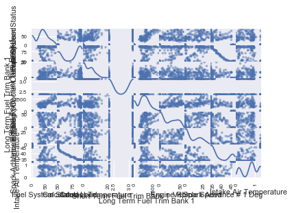
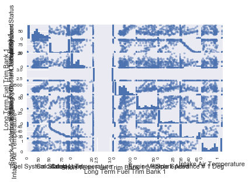
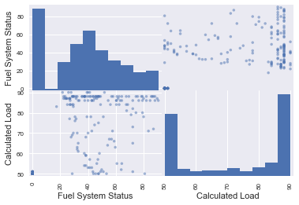

In [11]: np.set_printoptions(suppress=True)
In [12]: DISPLAY_MAX_ROWS = 20 # number of max rows to print for a DataFrame
In [13]: pd.set_option('display.max_rows', DISPLAY_MAX_ROWS)
In [14]: data = pd.read_csv("C:\Users\samdwise\Documents\Summer\computer security\new2\input.csv")
File "<ipython-input-14-d2de940f848c>", line 1
data = pd.read_csv("C:\Users\samdwise\Documents\Summer\computer security\new2\input.csv")
^
SyntaxError: (unicode error) 'unicodeescape' codec can't decode bytes in position 2-3: truncated \UXXXXXXXX escape
In [15]: data = pd.read_csv("input.csv")
Traceback (most recent call last):
File "<ipython-input-15-77262ec2bee2>", line 1, in <module>
data = pd.read_csv("input.csv")
File "C:\Users\samdwise\Anaconda3\lib\site-packages\pandas\io\parsers.py", line 655, in parser_f
return _read(filepath_or_buffer, kwds)
File "C:\Users\samdwise\Anaconda3\lib\site-packages\pandas\io\parsers.py", line 405, in _read
parser = TextFileReader(filepath_or_buffer, **kwds)
File "C:\Users\samdwise\Anaconda3\lib\site-packages\pandas\io\parsers.py", line 762, in __init__
self._make_engine(self.engine)
File "C:\Users\samdwise\Anaconda3\lib\site-packages\pandas\io\parsers.py", line 966, in _make_engine
self._engine = CParserWrapper(self.f, **self.options)
File "C:\Users\samdwise\Anaconda3\lib\site-packages\pandas\io\parsers.py", line 1582, in __init__
self._reader = parsers.TextReader(src, **kwds)
File "pandas\_libs\parsers.pyx", line 394, in pandas._libs.parsers.TextReader.__cinit__ (pandas\_libs\parsers.c:4209)
File "pandas\_libs\parsers.pyx", line 710, in pandas._libs.parsers.TextReader._setup_parser_source (pandas\_libs\parsers.c:8873)
FileNotFoundError: File b'input.csv' does not exist
In [16]: data = pd.read_csv("C:\\Users\\samdwise\\Documents\\Summer\\computer security\\new2\\input.csv")
In [17]: data.head()
Out[17]:
Time Fuel System Status Calculated Load Coolant Temperature \
0 19:20:55 0.0 51 0.0
1 19:20:57 0.0 51 0.0
2 19:20:59 0.0 51 0.0
3 19:21:01 0.0 51 0.0
4 19:21:03 0.0 51 0.0
Short Term Fuel Trim Bank 1 Long Term Fuel Trim Bank 1 Engine Rpm \
0 2.34 0 0
1 2.34 0 0
2 2.34 0 0
3 2.34 0 0
4 2.34 0 0
Vehicle Speed Spark Advance # 1 Deg Intake Air Temperature \
0 0 47 1.275
1 0 47 1.275
2 0 47 1.275
3 0 47 1.275
4 0 47 1.275
Oxygen Bank 1 Sensor 1 Volts
0 NaN
1 NaN
2 NaN
3 NaN
4 NaN
In [18]: data.loc[:, "Fuel System Status":"Intake Air Temperature"]
Out[18]:
Fuel System Status Calculated Load Coolant Temperature \
0 0.0 51 0.00
1 0.0 51 0.00
2 0.0 51 0.00
3 0.0 51 0.00
4 0.0 51 0.00
5 0.0 51 0.00
6 0.0 51 0.00
7 0.0 51 0.00
8 0.0 51 0.00
9 0.0 50 0.00
.. ... ... ...
201 35.7 88 7.81
202 43.9 88 9.38
203 47.5 88 11.72
204 45.5 88 12.50
205 40.0 88 10.94
206 37.3 88 8.59
207 42.0 88 7.03
208 45.5 88 7.03
209 46.3 88 7.81
210 37.3 88 5.47
Short Term Fuel Trim Bank 1 Long Term Fuel Trim Bank 1 Engine Rpm \
0 2.34 0 0
1 2.34 0 0
2 2.34 0 0
3 2.34 0 0
4 2.34 0 0
5 2.34 0 0
6 2.34 0 0
7 2.34 0 0
8 2.34 0 0
9 2.34 0 0
.. ... ... ...
201 3.13 983 16
202 3.13 880 9
203 3.13 788 5
204 3.13 925 7
205 3.13 986 7
206 3.13 769 5
207 3.13 955 6
208 3.13 842 4
209 3.13 889 0
210 3.13 822 0
Vehicle Speed Spark Advance # 1 Deg Intake Air Temperature
0 0 47 1.275
1 0 47 1.275
2 0 47 1.275
3 0 47 1.275
4 0 47 1.275
5 0 46 1.275
6 0 46 1.275
7 0 46 1.275
8 0 46 1.275
9 0 46 1.275
.. ... ... ...
201 0 34 0.035
202 0 34 0.035
203 0 34 0.445
204 0 34 0.875
205 0 34 0.895
206 0 34 0.915
207 0 35 0.210
208 0 35 0.115
209 1 35 0.820
210 3 35 0.095
[211 rows x 9 columns]
In [19]: pd.tools.plotting.scatter_matrix(data.loc[:, "Fuel System Status":"Intake Air Temperature"], diagonal="kde")
__main__:1: FutureWarning: 'pandas.tools.plotting.scatter_matrix' is deprecated, import 'pandas.plotting.scatter_matrix' instead.
Out[19]:
array([[<matplotlib.axes._subplots.AxesSubplot object at 0x000002E6354AE588>,
<matplotlib.axes._subplots.AxesSubplot object at 0x000002E6358B4EB8>,
<matplotlib.axes._subplots.AxesSubplot object at 0x000002E635951588>,
...,
<matplotlib.axes._subplots.AxesSubplot object at 0x000002E635ADB8D0>,
<matplotlib.axes._subplots.AxesSubplot object at 0x000002E635B346D8>,
<matplotlib.axes._subplots.AxesSubplot object at 0x000002E635BA73C8>],
[<matplotlib.axes._subplots.AxesSubplot object at 0x000002E635C05198>,
<matplotlib.axes._subplots.AxesSubplot object at 0x000002E635C6DE10>,
<matplotlib.axes._subplots.AxesSubplot object at 0x000002E635CD07F0>,
...,
<matplotlib.axes._subplots.AxesSubplot object at 0x000002E635E77048>,
<matplotlib.axes._subplots.AxesSubplot object at 0x000002E635E8A5C0>,
<matplotlib.axes._subplots.AxesSubplot object at 0x000002E635F3DAC8>],
[<matplotlib.axes._subplots.AxesSubplot object at 0x000002E635F9B7F0>,
<matplotlib.axes._subplots.AxesSubplot object at 0x000002E63600A588>,
<matplotlib.axes._subplots.AxesSubplot object at 0x000002E636064E48>,
...,
<matplotlib.axes._subplots.AxesSubplot object at 0x000002E63620E6A0>,
<matplotlib.axes._subplots.AxesSubplot object at 0x000002E63621DE10>,
<matplotlib.axes._subplots.AxesSubplot object at 0x000002E6362DA080>],
...,
[<matplotlib.axes._subplots.AxesSubplot object at 0x000002E636DB87F0>,
<matplotlib.axes._subplots.AxesSubplot object at 0x000002E636E454E0>,
<matplotlib.axes._subplots.AxesSubplot object at 0x000002E636CD5470>,
...,
<matplotlib.axes._subplots.AxesSubplot object at 0x000002E63703A3C8>,
<matplotlib.axes._subplots.AxesSubplot object at 0x000002E6370B15C0>,
<matplotlib.axes._subplots.AxesSubplot object at 0x000002E637113550>],
[<matplotlib.axes._subplots.AxesSubplot object at 0x000002E63714ED68>,
<matplotlib.axes._subplots.AxesSubplot object at 0x000002E6371DBA58>,
<matplotlib.axes._subplots.AxesSubplot object at 0x000002E637196630>,
...,
<matplotlib.axes._subplots.AxesSubplot object at 0x000002E6373BC198>,
<matplotlib.axes._subplots.AxesSubplot object at 0x000002E6374310B8>,
<matplotlib.axes._subplots.AxesSubplot object at 0x000002E637487AC8>],
[<matplotlib.axes._subplots.AxesSubplot object at 0x000002E6374F5A90>,
<matplotlib.axes._subplots.AxesSubplot object at 0x000002E637560D30>,
<matplotlib.axes._subplots.AxesSubplot object at 0x000002E63759F390>,
...,
<matplotlib.axes._subplots.AxesSubplot object at 0x000002E63774DAC8>,
<matplotlib.axes._subplots.AxesSubplot object at 0x000002E6377BF7B8>,
<matplotlib.axes._subplots.AxesSubplot object at 0x000002E637826160>]], dtype=object)

In [20]: plt.tight_layout()
Traceback (most recent call last):
File "<ipython-input-20-d4373de374a7>", line 1, in <module>
plt.tight_layout()
File "C:\Users\samdwise\Anaconda3\lib\site-packages\matplotlib\pyplot.py", line 1406, in tight_layout
fig.tight_layout(pad=pad, h_pad=h_pad, w_pad=w_pad, rect=rect)
File "C:\Users\samdwise\Anaconda3\lib\site-packages\matplotlib\figure.py", line 1753, in tight_layout
rect=rect)
File "C:\Users\samdwise\Anaconda3\lib\site-packages\matplotlib\tight_layout.py", line 326, in get_tight_layout_figure
max_nrows = max(nrows_list)
ValueError: max() arg is an empty sequence
<matplotlib.figure.Figure at 0x2e638ccc390>
In [21]: plt.show()
In [22]: pd.tools.plotting.scatter_matrix(data.loc[:, "Fuel System Status":"Intake Air Temperature"], diagonal="kde")
__main__:1: FutureWarning: 'pandas.tools.plotting.scatter_matrix' is deprecated, import 'pandas.plotting.scatter_matrix' instead.
Out[22]:
array([[<matplotlib.axes._subplots.AxesSubplot object at 0x000002E637453860>,
<matplotlib.axes._subplots.AxesSubplot object at 0x000002E63616B630>,
<matplotlib.axes._subplots.AxesSubplot object at 0x000002E635EEA4A8>,
...,
<matplotlib.axes._subplots.AxesSubplot object at 0x000002E638E7CB00>,
<matplotlib.axes._subplots.AxesSubplot object at 0x000002E638EEB7B8>,
<matplotlib.axes._subplots.AxesSubplot object at 0x000002E638F4E198>],
[<matplotlib.axes._subplots.AxesSubplot object at 0x000002E638FC3470>,
<matplotlib.axes._subplots.AxesSubplot object at 0x000002E639029400>,
<matplotlib.axes._subplots.AxesSubplot object at 0x000002E639061D30>,
...,
<matplotlib.axes._subplots.AxesSubplot object at 0x000002E639220198>,
<matplotlib.axes._subplots.AxesSubplot object at 0x000002E639287E10>,
<matplotlib.axes._subplots.AxesSubplot object at 0x000002E6392EB7F0>],
[<matplotlib.axes._subplots.AxesSubplot object at 0x000002E639363AC8>,
<matplotlib.axes._subplots.AxesSubplot object at 0x000002E6393C6A58>,
<matplotlib.axes._subplots.AxesSubplot object at 0x000002E63940A3C8>,
...,
<matplotlib.axes._subplots.AxesSubplot object at 0x000002E6395BE7F0>,
<matplotlib.axes._subplots.AxesSubplot object at 0x000002E63962E588>,
<matplotlib.axes._subplots.AxesSubplot object at 0x000002E6395CE828>],
...,
[<matplotlib.axes._subplots.AxesSubplot object at 0x000002E63A1CD4A8>,
<matplotlib.axes._subplots.AxesSubplot object at 0x000002E63A22BE10>,
<matplotlib.axes._subplots.AxesSubplot object at 0x000002E63A2AC128>,
...,
<matplotlib.axes._subplots.AxesSubplot object at 0x000002E63A390048>,
<matplotlib.axes._subplots.AxesSubplot object at 0x000002E63A49EF60>,
<matplotlib.axes._subplots.AxesSubplot object at 0x000002E63A4FFD30>],
[<matplotlib.axes._subplots.AxesSubplot object at 0x000002E63A56DA20>,
<matplotlib.axes._subplots.AxesSubplot object at 0x000002E639A9BB70>,
<matplotlib.axes._subplots.AxesSubplot object at 0x000002E63A618940>,
...,
<matplotlib.axes._subplots.AxesSubplot object at 0x000002E63A789CF8>,
<matplotlib.axes._subplots.AxesSubplot object at 0x000002E63A818BE0>,
<matplotlib.axes._subplots.AxesSubplot object at 0x000002E63A7D47B8>],
[<matplotlib.axes._subplots.AxesSubplot object at 0x000002E63A8E76A0>,
<matplotlib.axes._subplots.AxesSubplot object at 0x000002E63A946470>,
<matplotlib.axes._subplots.AxesSubplot object at 0x000002E63A9B7160>,
...,
<matplotlib.axes._subplots.AxesSubplot object at 0x000002E63AB323C8>,
<matplotlib.axes._subplots.AxesSubplot object at 0x000002E63ABC10B8>,
<matplotlib.axes._subplots.AxesSubplot object at 0x000002E63AB764A8>]], dtype=object)
In [23]: pd.tools.plotting.scatter_matrix(data.loc[:, "Fuel System Status":"Intake Air Temperature"], diagonal="hist")
__main__:1: FutureWarning: 'pandas.tools.plotting.scatter_matrix' is deprecated, import 'pandas.plotting.scatter_matrix' instead.
Out[23]:
array([[<matplotlib.axes._subplots.AxesSubplot object at 0x000002E63AD57550>,
<matplotlib.axes._subplots.AxesSubplot object at 0x000002E63C02F9B0>,
<matplotlib.axes._subplots.AxesSubplot object at 0x000002E63C161E80>,
...,
<matplotlib.axes._subplots.AxesSubplot object at 0x000002E63C27A940>,
<matplotlib.axes._subplots.AxesSubplot object at 0x000002E63C325FD0>,
<matplotlib.axes._subplots.AxesSubplot object at 0x000002E639BFFE48>],
[<matplotlib.axes._subplots.AxesSubplot object at 0x000002E63A1EDEF0>,
<matplotlib.axes._subplots.AxesSubplot object at 0x000002E639309128>,
<matplotlib.axes._subplots.AxesSubplot object at 0x000002E63C3C85F8>,
...,
<matplotlib.axes._subplots.AxesSubplot object at 0x000002E63C535B70>,
<matplotlib.axes._subplots.AxesSubplot object at 0x000002E63C5C07F0>,
<matplotlib.axes._subplots.AxesSubplot object at 0x000002E63C5D2F98>],
[<matplotlib.axes._subplots.AxesSubplot object at 0x000002E63C6902B0>,
<matplotlib.axes._subplots.AxesSubplot object at 0x000002E63C6DDF98>,
<matplotlib.axes._subplots.AxesSubplot object at 0x000002E63C757D30>,
...,
<matplotlib.axes._subplots.AxesSubplot object at 0x000002E63C8D9208>,
<matplotlib.axes._subplots.AxesSubplot object at 0x000002E63C95EE48>,
<matplotlib.axes._subplots.AxesSubplot object at 0x000002E63C973FD0>],
...,
[<matplotlib.axes._subplots.AxesSubplot object at 0x000002E63D518BA8>,
<matplotlib.axes._subplots.AxesSubplot object at 0x000002E63D577978>,
<matplotlib.axes._subplots.AxesSubplot object at 0x000002E63D5E7668>,
...,
<matplotlib.axes._subplots.AxesSubplot object at 0x000002E63D7639B0>,
<matplotlib.axes._subplots.AxesSubplot object at 0x000002E63D7F26A0>,
<matplotlib.axes._subplots.AxesSubplot object at 0x000002E63D6D7080>],
[<matplotlib.axes._subplots.AxesSubplot object at 0x000002E63D885F98>,
<matplotlib.axes._subplots.AxesSubplot object at 0x000002E63D260278>,
<matplotlib.axes._subplots.AxesSubplot object at 0x000002E63D94A7F0>,
...,
<matplotlib.axes._subplots.AxesSubplot object at 0x000002E63DAC5978>,
<matplotlib.axes._subplots.AxesSubplot object at 0x000002E63DB56668>,
<matplotlib.axes._subplots.AxesSubplot object at 0x000002E63DB0F240>],
[<matplotlib.axes._subplots.AxesSubplot object at 0x000002E63DC23128>,
<matplotlib.axes._subplots.AxesSubplot object at 0x000002E63DC7BEB8>,
<matplotlib.axes._subplots.AxesSubplot object at 0x000002E63DCEBBA8>,
...,
<matplotlib.axes._subplots.AxesSubplot object at 0x000002E63DE66E10>,
<matplotlib.axes._subplots.AxesSubplot object at 0x000002E63DEF4B00>,
<matplotlib.axes._subplots.AxesSubplot object at 0x000002E63DEB0780>]], dtype=object)
In [24]: DISPLAY_MAX_ROWS = 200 # number of max rows to print for a DataFrame
In [25]: pd.set_option('display.max_rows', DISPLAY_MAX_ROWS)
In [26]: pd.tools.plotting.scatter_matrix(data.loc[:, "Fuel System Status":"Intake Air Temperature"], diagonal="hist")
__main__:1: FutureWarning: 'pandas.tools.plotting.scatter_matrix' is deprecated, import 'pandas.plotting.scatter_matrix' instead.
Out[26]:
array([[<matplotlib.axes._subplots.AxesSubplot object at 0x000002E63E562128>,
<matplotlib.axes._subplots.AxesSubplot object at 0x000002E63E609E80>,
<matplotlib.axes._subplots.AxesSubplot object at 0x000002E63E68C470>,
...,
<matplotlib.axes._subplots.AxesSubplot object at 0x000002E63E75A470>,
<matplotlib.axes._subplots.AxesSubplot object at 0x000002E63E7FFB00>,
<matplotlib.axes._subplots.AxesSubplot object at 0x000002E63E859828>],
[<matplotlib.axes._subplots.AxesSubplot object at 0x000002E63E8C55C0>,
<matplotlib.axes._subplots.AxesSubplot object at 0x000002E63E920E80>,
<matplotlib.axes._subplots.AxesSubplot object at 0x000002E63E9A3198>,
...,
<matplotlib.axes._subplots.AxesSubplot object at 0x000002E63EADFCC0>,
<matplotlib.axes._subplots.AxesSubplot object at 0x000002E63EB9B198>,
<matplotlib.axes._subplots.AxesSubplot object at 0x000002E63EBE9E80>],
[<matplotlib.axes._subplots.AxesSubplot object at 0x000002E63EC63C18>,
<matplotlib.axes._subplots.AxesSubplot object at 0x000002E63ECC9518>,
<matplotlib.axes._subplots.AxesSubplot object at 0x000002E63ED417F0>,
...,
<matplotlib.axes._subplots.AxesSubplot object at 0x000002E63D3BC0B8>,
<matplotlib.axes._subplots.AxesSubplot object at 0x000002E63EE47978>,
<matplotlib.axes._subplots.AxesSubplot object at 0x000002E63EE536A0>],
...,
[<matplotlib.axes._subplots.AxesSubplot object at 0x000002E6409B2780>,
<matplotlib.axes._subplots.AxesSubplot object at 0x000002E640A12550>,
<matplotlib.axes._subplots.AxesSubplot object at 0x000002E640A82240>,
...,
<matplotlib.axes._subplots.AxesSubplot object at 0x000002E640BFC588>,
<matplotlib.axes._subplots.AxesSubplot object at 0x000002E640C8A278>,
<matplotlib.axes._subplots.AxesSubplot object at 0x000002E640C40550>],
[<matplotlib.axes._subplots.AxesSubplot object at 0x000002E640D50CF8>,
<matplotlib.axes._subplots.AxesSubplot object at 0x000002E640DB3AC8>,
<matplotlib.axes._subplots.AxesSubplot object at 0x000002E640E217B8>,
...,
<matplotlib.axes._subplots.AxesSubplot object at 0x000002E640F9FB00>,
<matplotlib.axes._subplots.AxesSubplot object at 0x000002E64102A7F0>,
<matplotlib.axes._subplots.AxesSubplot object at 0x000002E640FE53C8>],
[<matplotlib.axes._subplots.AxesSubplot object at 0x000002E6410FC2B0>,
<matplotlib.axes._subplots.AxesSubplot object at 0x000002E64115B080>,
<matplotlib.axes._subplots.AxesSubplot object at 0x000002E6411C2D30>,
...,
<matplotlib.axes._subplots.AxesSubplot object at 0x000002E64133EF98>,
<matplotlib.axes._subplots.AxesSubplot object at 0x000002E6413CBC88>,
<matplotlib.axes._subplots.AxesSubplot object at 0x000002E641388908>]], dtype=object)

In [27]: pd.tools.plotting.scatter_matrix(data.loc[:, "Fuel System Status"], diagonal="hist")
__main__:1: FutureWarning: 'pandas.tools.plotting.scatter_matrix' is deprecated, import 'pandas.plotting.scatter_matrix' instead.
Traceback (most recent call last):
File "<ipython-input-27-b6f9cc262d58>", line 1, in <module>
pd.tools.plotting.scatter_matrix(data.loc[:, "Fuel System Status"], diagonal="hist")
File "C:\Users\samdwise\Anaconda3\lib\site-packages\pandas\tools\plotting.py", line 17, in wrapper
return getattr(_plotting, t)(*args, **kwargs)
File "C:\Users\samdwise\Anaconda3\lib\site-packages\pandas\plotting\_misc.py", line 57, in scatter_matrix
n = df.columns.size
File "C:\Users\samdwise\Anaconda3\lib\site-packages\pandas\core\generic.py", line 2966, in __getattr__
return object.__getattribute__(self, name)
AttributeError: 'Series' object has no attribute 'columns'
In [28]: pd.plotting.scatter_matrix(data.loc[:, "Fuel System Status":"Intake Air Temperature"], diagonal="hist")
Out[28]:
array([[<matplotlib.axes._subplots.AxesSubplot object at 0x000002E641A2F358>,
<matplotlib.axes._subplots.AxesSubplot object at 0x000002E641449748>,
<matplotlib.axes._subplots.AxesSubplot object at 0x000002E63E67CF60>,
...,
<matplotlib.axes._subplots.AxesSubplot object at 0x000002E641BC6160>,
<matplotlib.axes._subplots.AxesSubplot object at 0x000002E641C2CEB8>,
<matplotlib.axes._subplots.AxesSubplot object at 0x000002E641C8F7B8>],
[<matplotlib.axes._subplots.AxesSubplot object at 0x000002E641D06A90>,
<matplotlib.axes._subplots.AxesSubplot object at 0x000002E641D6AA20>,
<matplotlib.axes._subplots.AxesSubplot object at 0x000002E641DAA390>,
...,
<matplotlib.axes._subplots.AxesSubplot object at 0x000002E641F5F7B8>,
<matplotlib.axes._subplots.AxesSubplot object at 0x000002E641FD0470>,
<matplotlib.axes._subplots.AxesSubplot object at 0x000002E64202CE10>],
[<matplotlib.axes._subplots.AxesSubplot object at 0x000002E6420AE128>,
<matplotlib.axes._subplots.AxesSubplot object at 0x000002E6421120B8>,
<matplotlib.axes._subplots.AxesSubplot object at 0x000002E6421489E8>,
...,
<matplotlib.axes._subplots.AxesSubplot object at 0x000002E6422F7E10>,
<matplotlib.axes._subplots.AxesSubplot object at 0x000002E642371BA8>,
<matplotlib.axes._subplots.AxesSubplot object at 0x000002E6423D64A8>],
...,
[<matplotlib.axes._subplots.AxesSubplot object at 0x000002E643F06AC8>,
<matplotlib.axes._subplots.AxesSubplot object at 0x000002E643F69978>,
<matplotlib.axes._subplots.AxesSubplot object at 0x000002E643FAB1D0>,
...,
<matplotlib.axes._subplots.AxesSubplot object at 0x000002E644162710>,
<matplotlib.axes._subplots.AxesSubplot object at 0x000002E6441D1400>,
<matplotlib.axes._subplots.AxesSubplot object at 0x000002E644230D68>],
[<matplotlib.axes._subplots.AxesSubplot object at 0x000002E6442A7F60>,
<matplotlib.axes._subplots.AxesSubplot object at 0x000002E64430BEF0>,
<matplotlib.axes._subplots.AxesSubplot object at 0x000002E64434B748>,
...,
<matplotlib.axes._subplots.AxesSubplot object at 0x000002E644501C88>,
<matplotlib.axes._subplots.AxesSubplot object at 0x000002E644570978>,
<matplotlib.axes._subplots.AxesSubplot object at 0x000002E6445D5320>],
[<matplotlib.axes._subplots.AxesSubplot object at 0x000002E644651400>,
<matplotlib.axes._subplots.AxesSubplot object at 0x000002E6446B43C8>,
<matplotlib.axes._subplots.AxesSubplot object at 0x000002E6446ECBE0>,
...,
<matplotlib.axes._subplots.AxesSubplot object at 0x000002E6448A9160>,
<matplotlib.axes._subplots.AxesSubplot object at 0x000002E644911E10>,
<matplotlib.axes._subplots.AxesSubplot object at 0x000002E6449757B8>]], dtype=object)
In [29]: pd.plotting.scatter_matrix(data.loc[:, "Fuel System Status":"Calculated Load"], diagonal="hist")
Out[29]:
array([[<matplotlib.axes._subplots.AxesSubplot object at 0x000002E644FDD908>,
<matplotlib.axes._subplots.AxesSubplot object at 0x000002E644E87898>],
[<matplotlib.axes._subplots.AxesSubplot object at 0x000002E644FED400>,
<matplotlib.axes._subplots.AxesSubplot object at 0x000002E64500C470>]], dtype=object)

In [30]: %clear
In [31]: %reset -f
In [32]: import pandas as pd
In [33]: import numpy as np
In [34]: import matplotlib.pyplot as plt
In [35]: import seaborn as sns
In [36]: from sklearn.preprocessing import scale
In [37]: from sklearn.decomposition import PCA
In [38]: from sklearn.discriminant_analysis import LinearDiscriminantAnalysis
In [39]: from scipy import stats
In [40]: %matplotlib inline
In [41]: np.set_printoptions(suppress=True)
In [42]: data = pd.read_csv("C:\\Users\\samdwise\\Documents\\Summer\\computer security\\new2\\input.csv",header=0)
In [43]: print(data.head())
Time Fuel System Status Calculated Load Coolant Temperature \
0 19:20:55 0.0 51 0.0
1 19:20:57 0.0 51 0.0
2 19:20:59 0.0 51 0.0
3 19:21:01 0.0 51 0.0
4 19:21:03 0.0 51 0.0
Short Term Fuel Trim Bank 1 Long Term Fuel Trim Bank 1 Engine Rpm \
0 2.34 0 0
1 2.34 0 0
2 2.34 0 0
3 2.34 0 0
4 2.34 0 0
Vehicle Speed Spark Advance # 1 Deg Intake Air Temperature \
0 0 47 1.275
1 0 47 1.275
2 0 47 1.275
3 0 47 1.275
4 0 47 1.275
Oxygen Bank 1 Sensor 1 Volts
0 NaN
1 NaN
2 NaN
3 NaN
4 NaN
In [44]: